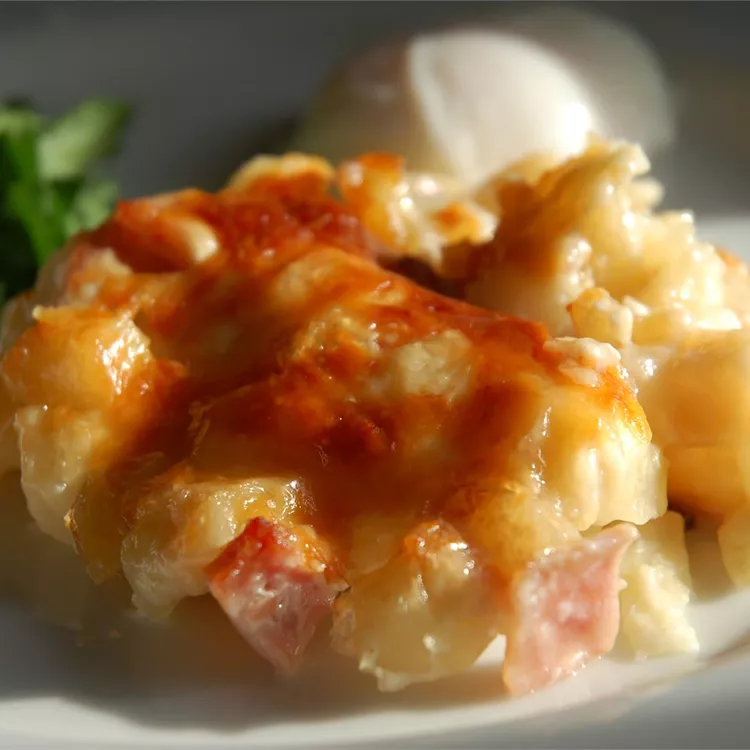

Cheesy Ham and Hash Brown Casserole

Description
This ham and hash brown casserole is quick and easy to make, not to mention delicious! I mostly serve this as a breakfast casserole, but it's great anytime. It may be served with or without diced ham
Ingredients
- Cooking Spray
<1i>1 (32 ounce) package frozen hash brown potatoes
- 2 (10.5 ounce) cans condensed cream of potato soup
- 1 (16 ounce) container sour cream
- 8 ounces cooked, diced ham
- 1 1/2 cups grated Parmesan cheese
Steps
- Preheat the oven to 375 degrees F (190 degrees C). Lightly grease a 9x13-inch baking dish with cooking spray.
- Mix together hash browns, condensed soup, sour cream, Cheddar cheese, and ham in a bowl until well combined. Spread evenly into the prepared dish. sprinkle with Parmesan cheese.
- Bake in the preheated oven until bubbly and lightly brown, about 1 hour.